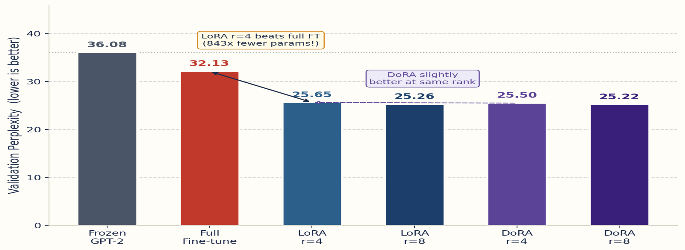
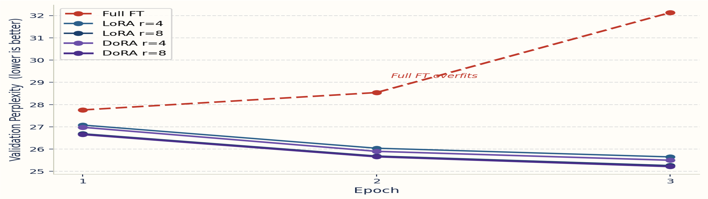

Projects / LoRA and DoRA
CS 4782 Deep Learning, Cornell · PyTorch
Fine-tuning GPT-2 with LoRA and DoRA, from scratch
Adapting a language model to new text usually means retraining all of its 124 million settings. LoRA freezes the model and trains a tiny add-on instead. I implemented LoRA and its newer extension DoRA myself, with no fine-tuning library, and compared six setups.

| Configuration | Trainable parameters | Perplexity | Peak GPU memory |
|---|---|---|---|
| Frozen GPT-2 | 0 | 36.08 | N/A |
| Full fine-tune | 124,440K | 32.13 | 5,753 MB |
| LoRA r=4 | 147K | 25.65 | 4,118 MB |
| LoRA r=8 | 295K | 25.26 | 4,120 MB |
| DoRA r=4 | 166K | 25.50 | 4,227 MB |
| DoRA r=8 | 313K | 25.22 | 4,228 MB |
The surprise
I expected LoRA to roughly match full fine-tuning, not beat it. The training curves explain why: full fine-tuning starts overfitting WikiText-2's small training set after the first epoch, while LoRA's small add-on can't memorize as much, so it generalizes better.

How I made sure it was right
- Parameter audit: confirmed only the adapter weights could change during training.
- Equivalence check: confirmed the adapted model's output matched the original GPT-2 exactly before training started.
What's next
DoRA beat LoRA at the same size every time, but by less than the original paper reports on much larger models. Whether that gap grows with model size is the question I'd test next.
My poster
Full source, report and poster: github.com/arnavtevatia/lora-dora-gpt2